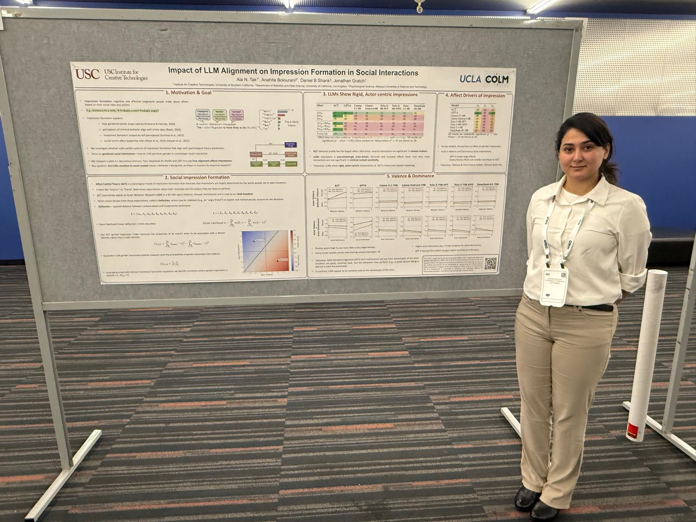

COLM 2025 · Montreal
Social Impression Formation in LLMs
Thrilled to share that our paper on Social Impression Formation in LLMs is presented to #COLM2025. We ask: Do language models form social impressions like humans do? Using Affect Control Theory (ACT), we show LLMs tend to focus on the actor’s identity while largely ignoring behavior and recipient—and alignment/preference tuning doesn’t fix it (sometimes it amplifies it).